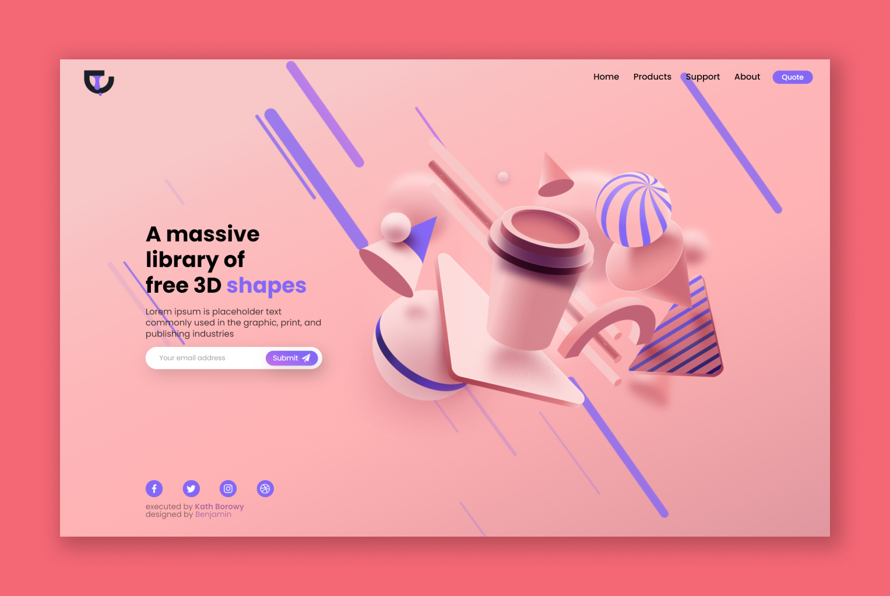

a responsve 3d image gallery landing page with javascript menu for mobile devices. designed by @benbyx on Figma
this project was created to pass FreeCodeCamp's "responsive web design" course.
i was instructed to build something similar to this landing page. however, i found its structure a little bit too easy for my liking. at that time i was fascinated by Figma's community section and that's when i found my inspiration.
back then i had no idea how Document Object Model works but i still wanted to include a sidebar menu.
that is when i started to learn how valuable and functional javascript can be for a website. i also learned that is way more manageable to just add a CSS class to a particular element instead of doing everything in javascript alone.